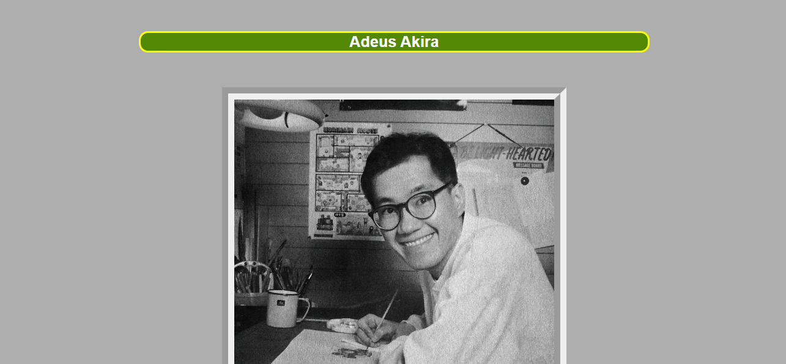
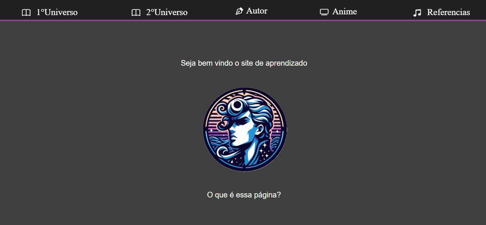
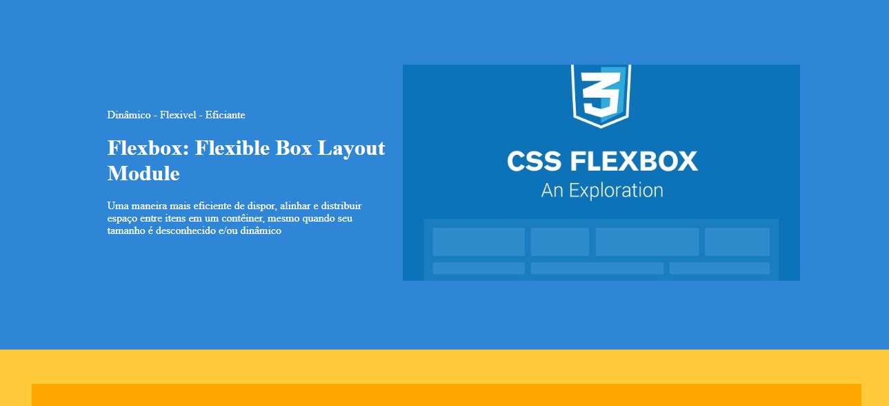
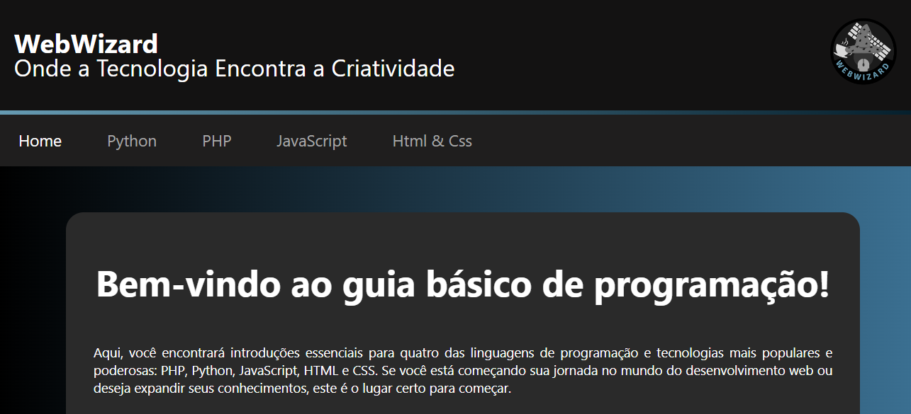

<link rel="stylesheet" href="css/reset.css">
<link rel="stylesheet" href="css/style.css">

<section class="conteudo-central">
    <p>
        Atualmente estudo a linguagem de programação JavaScript, a de marcação HTML e a de estilo CSS, nesse portfólio está meus primeiros sites em HTML e CSS.
    </p>

    <div class="cards-projetos">
        <h2>Aqui estão meus outros projetos.</h2>
        <section class="card">
            <h3>Atividade sobre Divs</h3>
            
            <p>Esse site é uma atividade pedida pelo professor Wagner dá matéria Front-end para aprendermos o conceito básico sobre divs.</p>
            <a href="https://hiagogabrielga.github.io/Front-end/atividade_01/" target="_blank">Ver site</a>
        </section>        
        <section class="card">
            <h3>Homenagem para Akira</h3>
            
            <p>Esse site foi feito quando o mundo recebeu a triste notícia que Akira Toriyama havia falecido no dia 1° de Março de 2024, essa foi minha forma de mostrar respeito, infelizmente como na época eu sábia bem pouco de HTMl e CSS, o site não é responsivo e se distorce facilmente.</p>
            <a href="https://hiagogabrielga.github.io/Front-end/homenagem/" target="_blank">Ver site</a>
        </section>
        <section class="card">
            <h3>Projeto Jojo</h3>
            
            <p>Esse site foi feito para a primeira avaliação da disciplina de Front-end, o site fala do universo de Jojo’s bizarre adventure, mas meu conhecimento ainda era bem iniciante e ainda a alguns problemas e não é responsivo.</p>
            <a href="https://hiagogabrielga.github.io/Front-end/Projeto-jojo/" target="_blank">Ver site</a>
        </section>
        <section class="card">
            <h3>Atividade Flex-box</h3>
            
            <p>Esse site é uma atividade pedida pelo professor Wagner dá disciplina Front-end para aprendermos o conceito básico sobre Flex-box</p>
            <a href="https://hiagogabrielga.github.io/Front-end/Projeto-flexbox/" target="_blank">ver site</a>
        </section>
        <section class="card">
            <h3>Projeto WebWizard</h3>
            
            <p>Esse site foi feito para a segunda avaliação da disciplina de Front-end, o site introduz o básico das linguagens de programação como Python, Javascript e PHP e também introduz o básico de HTML e CSS</p>
            <a href="https://hiagogabrielga.github.io/Front-end/Projeto-linguagens/" target="_blank">Ver site</a>
        </section>
    </div>
</section>